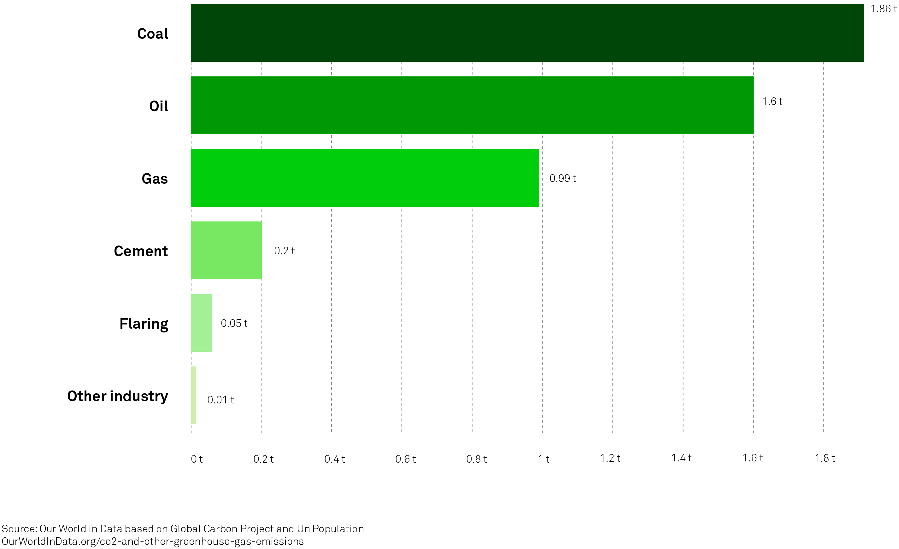

Coal-fired power plants are the dirtiest of fossil fuels, emitting Co2 and contributing to global warming. Despite many agreements being signed, coal remains irreplacable. Just like in Poland, where it makes 65% of its energy sources and places it in the top 20 biggest co2 emitters in the world.
